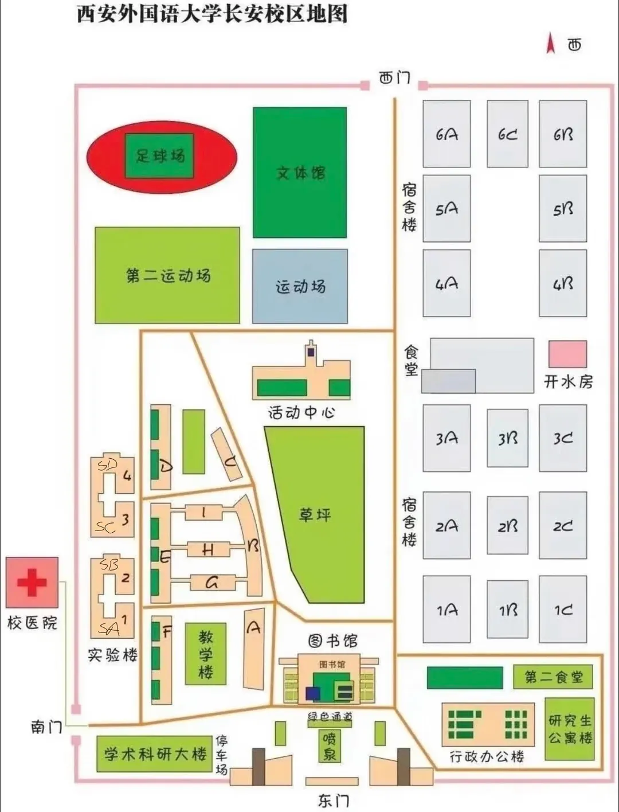

30 秒了解西外
给新生的第一份自我介绍，请查收。
西安外国语大学（Xi'an International Studies University，简称"西外""XISU"）是新中国最早建立的 4 所外语院校之一，西北地区唯一一所主要外国语种齐全的高校，陕西省重点建设的高水平大学，博士学位授予单位。
非通用语种提前批次招生院校
推荐优秀本科生免试攻读硕士研究生院校
国家留学基金委留学预备教育中心
在法国、哈萨克斯坦、阿根廷建有 3 所孔子学院
与国（境）外 305 所高校、科研机构签订合作协议，实施本硕博不同层次联合培养
引进美国、德国、瑞士、日本及港澳地区境外访学、实习项目
🌟 国家级一流本科专业建设点（20 个）
🏅 省级一流本科专业建设点（9 个）
长安校区展示
本科生主要学习和生活的区域，先认个门～

🧭 校园主要地点速查
日常上课、自习、借书的主阵地
计划财务部办事大厅在校务楼 A 区 101 室
校园卡卡务中心在一层，医保窗口也在这里
就诊买药、医保咨询（206 室）
足球场、运动场、第二运动场，军训/体测/运动的好去处
校园三大出入口，出门前看清楚方向
本科生主要住宿区，详见「宿舍」模块
生活与科研的补充站点
干饭人主场，详见「食堂」模块
🚌 到校交通指南
- 🚕 出租车约 1 小时 10 分钟，约 55 元
- 🚌 乘 616 路公交至终点站（西安外国语大学长安校区）
- 🚇 地铁 4 号线 → 换乘 15 号线至樱花广场站，再转 616 路公交
- 🚕 出租车约 1 小时 15 分钟，约 110 元
- 🚌 乘机场大巴（长安大学城线）至樱花广场公交车站，再换乘 616 路公交
- 🚕 出租车约 1 小时，约 70 元
- 🚇 地铁 2 号线至航天城站 → 换乘 15 号线至樱花广场站，再乘 616 路公交
📌 学校地址：西安市长安区文苑南路 6 号，邮编 710128。开学季人多车多，建议错峰出行，贵重物品随身携带。
宿舍信息全攻略
门禁、熄灯、限电、洗衣、洗澡……你想知道的都在这里。
🏠 宿舍房型速览
- 两张上下铺 + 两个上床下桌
- 有独立卫生间和阳台，不能洗澡
- 住宿费约 1000 元/年（首年 1200 元，含管理费）
来源：学生经验帖，未官方核实
- 仅 3B 等少数楼栋有，需申请且命中率低
- 上床下桌 + 独立卫浴
- 住宿费约 1200 元/年
来源：学生经验帖，未官方核实
- 部分楼栋分 A/B/C 座
- 常见说法：女生多在 1—4 号楼，男生在 5 号楼（5B）
- 以迎新网选宿舍时系统实际可选项为准
来源：学生经验帖，未官方核实
🖥️ 线上选宿舍（官方确认）
- 学校在迎新网组织新生线上选宿舍、选床上用品，2025 级通知见 yingxin.xisu.edu.cn/info/1002/1106.htm，操作按《迎新系统学生使用手册》进行（yingxin.xisu.edu.cn/info/1002/1096.htm）；2026 级以迎新网最新通知为准。
- 学生经验称"床位靠抢、手速和网速决定房型与床位"（未官方核实），建议录取后关注迎新网公告、提前定好闹钟。
- 床品可线上选购学校套餐，也可自带或提前邮寄到校。
⏰ 作息与用电
周日—周四 23:30 关寝，周五—周六推迟到凌晨 1 点（学生经验帖）。晚归登记方式与处罚请以官方《学生公寓管理规定（2024 修订）》为准。
周日—周四 23:30 断电；周五—周六凌晨 1:00 断电；考试周全天不断电（学生经验帖，未官方核实）。
宿舍内禁用大功率电器（吹风机、卷发棒等），吹头发可到澡堂。具体跳闸功率阈值未找到可靠来源，以楼内张贴规定为准。
🚿 生活设施
宿舍内不能洗澡，用楼底公共澡堂（无隔间），刷饭卡按分钟计费；女生澡堂在 1—4 号楼区域、男生在 5B；西门校外有单间浴室约 3—4 元/次（学生经验帖）。热水供应时段以浴室现场通知为准。
楼内设洗衣房（可参考小红书"洗衣篇新生须知"攻略帖），扫码/刷卡方式与单次价格以楼内提示为准。
校内设开水房；学校正推进直饮水项目（后勤公告）。宿舍楼内饮水设备情况以楼内实际为准。
每间约 2 个网口（学生经验帖）；办理方式见信息化处"IT 迎新·校园网服务指南"（官方公众号），具体套餐价格以官方指南为准；学生经验称电信宽带更稳（未核实）。
校内菜鸟驿站在第二运动场下商业街（韵达/申通等），隔壁顺丰，京东与邮政也在商业街；校内驿站存放时限约 3 天，建议算好时间再寄。收货地址常见写法"陕西省西安市长安区文苑南路 6 号西安外国语大学长安校区（邮编 710128）"，精确写法以录取材料/迎新网通知为准。
学生经验称宿舍有暖气、有空调（未官方核实）；使用费/计费方式未找到官方公告，以公寓中心通知为准；老楼可能无吊扇，夏天建议自备小风扇。
本模块中房型、断电时间、澡堂等细节主要整理自学生经验帖，未官方核实；官方口径请以迎新网选宿舍通知和《西安外国语大学学生公寓管理规定（2024 修订）》（gyzx.xisu.edu.cn/regulaxq.html?regId=6）为准，2026 级的对应通知会更新同级链接。
📎 宿舍信息来源参考
官方：迎新网选宿舍通知（yingxin.xisu.edu.cn/info/1002/1106.htm）；迎新系统使用手册（yingxin.xisu.edu.cn/info/1002/1096.htm）；学生公寓管理规定 2024 修订（gyzx.xisu.edu.cn/regulaxq.html?regId=6）；信息化处校园网指南（xxhc.xisu.edu.cn/info/1259/1860.htm）；IT 迎新·校园网服务指南（公众号文章）。
学生经验帖（未官方核实）：小红书《西外长安校区宿舍指南》《宿舍分布详情》《洗衣篇新生须知》《浴室篇新生须知》《快递篇新生须知》《校园网篇新生须知》《抢宿舍攻略》等。
饮食 · 食堂
干饭人干饭魂，先摸清西外美食地图。
💳 吃饭支付方式（官方指南）
- 校园电子饭卡：报到前即可领取，用微信付款码在食堂扫码付款。领取流程：关注"西安外国语大学"企业号 → 进入西安外国语大学移动校园 → 校园电子饭卡 → 认证并领取。
- 校园一卡通：入校后由所在学院发放，可用于上课打卡、图书馆借书、校医院就诊买药、食堂消费等。使用前需到卡务中心充值（大学生活动中心一层）。
- ⚠️ 电子饭卡与一卡通实体卡相互独立，消费不通用。
🍽️ 食堂分布
长安校区两大主要食堂（学生经验帖与校内地图可查），具体位置以校内导览为准
官方后勤发布过《自营民族餐厅档口招商公告》，确认校内设自营民族餐厅
地图标注的校内食府，可开学后实地探店
🏪 校外与周边
- 校门周边有商业街及小吃（学生帖常见标签"西安外国语大学商业街"）。
- 周边商户示例：明洞街韩国炸鸡（西外店）、南门口"竹间葫芦鸡"等（地图/网络信息）。
- 大学生活动中心周边及商业街的具体餐饮构成无官方清单，到校后实地了解最靠谱。
😋 口碑攻略去哪找
- 小红书《新生攻略｜食堂超全介绍》《西外食堂超全攻略》《西外一食堂》等学生口碑帖，含各食堂档口与推荐菜，开学后可对照探店。
- 营业时间与是否支持微信/支付宝直接扫码：未找到可靠来源，以食堂现场公示为准；食堂支付通常用一卡通 / 电子饭卡微信扫码（详见上方官方指南）。
- 澡堂"刷饭卡按分钟计费"（学生经验帖）——食堂、澡堂消费用同一张卡，记得及时充值。
报到全流程
从收到录取通知书到坐在教室里，按这条时间线走就稳了。
报到前 · 线上准备
- 登录迎新系统，查看你的 15 位学号（107242026******）
- 进入学校主页（www.xisu.edu.cn）导航栏"网办大厅"，完成账号激活 —— 这是你入学后登录各类信息化平台的唯一账号，请妥善保存；忘记密码可通过绑定手机号/邮箱自助找回
- 通过网办大厅 / 掌上西外 APP / 移动校园（微信企业号）的"人脸照片采集"服务上传规范照片，经辅导员审核后完成采集（校门、学生公寓、图书馆都有人脸识别门禁）
- 缴费：8 月 20 日起可通过微信 / 支付宝 / 现场三种方式缴纳学费、住宿费、体检费（详见下方"缴费须知"）
- 领取校园电子饭卡（微信企业号 → 移动校园 → 校园电子饭卡）
- 团组织关系：由原学校团支部通过"智慧团建"系统在线办理，发起转接前确认目标团支部全称；党组织关系（党员新生）：外省考生优先通过陕西省党建信息化平台转接，无法联网的可由基层党委开具纸质介绍信；本省考生由原单位在线办理
- 提前准备本人近期一寸免冠、光面、平版、半身同底版照片 10 张
🗓️ 2025 级线上流程参考时间线（2026 级以迎新网当年通知为准）：8 月下旬迎新系统开放（先查学号再登录，yingxin.xisu.edu.cn）→ 网上选宿舍（2025 级为 8 月 24 日—26 日 10:00—16:00，仅支持电脑网页端，只能选一次、不能撤销，未按时选由系统统一分配）→ 网上选床品（微信在线付款，2025 级为 8 月 24 日—9 月 1 日）；迎新系统还包含信息采集、缴费、体检单打印、军训服预定、到校导航等环节。床品领取点官方暂定为大学生活动中心（凭身份证 + 一卡通领取），自带床品须带正规购买凭证并登记。
9 月 10 日—11 日 · 到校报到
- 带齐证件材料：录取通知书、身份证（及复印件）、高考准考证、学籍档案、团员证以及户口、党团组织关系介绍信、证件照等；所有证件材料上的姓名应完全一致，凡涂改者一律无效
- 往年学校在西安火车站、地铁 2 号线韦曲南站设免费迎新接待站（2026 级接站安排以官方通知为准），到站后可直接乘车入校
- 到学院报到注册点报到（往年设在栾树大道沿线，各年可能调整）：查验录取通知书 → 核对个人信息 → 领取校园一卡通；先到学院接待点领宿舍钥匙，志愿者会协助搬行李
- 床上用品到指定地点领取（官方暂定大学生活动中心）；军训服需自购：可在迎新系统预定或到校购买（往年购买点传为"五四广场"，研究生无需军训服，以当年通知为准）
- 报到期间校内设家长休息区、免费饮品供应，组织校园开放日（参观校史馆、图书馆等），各学院举办新生家长会
- 教改班报名同步启动：商学院 ACCA/CIMA、经济金融学院 CFA 等均在对应学院新生报到处现场报名（详见「升学攻略」）
报到后 · 安顿与注册
- 参加入学体检（体检费 109 元已随缴费缴纳）：往年安排在报到后数日（2023 级为 9 月 9 日—12 日），地点为长安校区文体馆，项目包括抽血、结核菌素试验、血压、内外科、身高体重、视力等，体检单可在迎新系统打印；体检后还有入学健康教育宣讲。校医院长安校区急诊电话：85319443（医办）/ 85319450（护办）。复查不合格者按教育部有关规定办理
- 需迁户口的同学：入学报到后两周内将户籍迁转材料交至辅导员处，学校户籍室统一办理，逾期不再集中办理（详见下方"户籍迁移说明"）
- 行李邮寄：校内菜鸟驿站在第二运动场下商业街（韵达/申通等），隔壁顺丰，京东与邮政也在商业街；校内驿站存放时限约 3 天，建议算好时间再寄（学校地址：陕西省西安市长安区文苑南路 6 号西安外国语大学长安校区，邮编 710128）
- 军训开始前把「必备清单」里的军训物品备齐 💪（军训服、软鞋垫、防晒霜、大容量水杯等）
- 关注 2027 年度大学生医保集中缴费期（2026 年 10 月—12 月），缴费通知以"西外校医院"公众号为准
- 留存辅导员联系方式并告知家长，紧急情况第一时间联系核实
💰 缴费须知（官方指南）
微信搜索"西安外国语大学计划财务部"服务号 → 智慧财务 → 缴费大厅 → 本硕博学宿费 / 新生体检费 → 输入个人信息 → 核对费用 → 完成缴费
支付宝搜索"西安外国语大学"官方生活号 → 缴费大厅 → 本硕博学宿费 / 新生体检费 → 输入个人信息 → 核对费用 → 完成缴费
刷银行卡或现金，入校后前往校务楼 A 区 101 室计划财务部办事大厅现场缴费
| 类别 | 费用（元/人·学年） | 备注 |
|---|---|---|
| 学费 · 第一类 | 5000 | 非外语类文科专业，按学年缴纳 |
| 学费 · 第二类 | 5400 | 外语类文科专业，按学年缴纳 |
| 学费 · 第三类 | 6000 | 理工类专业，按学年缴纳 |
| 学费 · 第四类 | 11000 | 艺术理论类专业，按学年缴纳 |
| 学费 · 第五类 | 14000 | 艺术实践类专业，按学年缴纳 |
| 住宿费 | 1000 | 按学年缴纳 |
| 体检费 | 109 | 入学一次性缴纳 |
📚 五类学费分别包含哪些专业？
第一类（非外语类文科）：汉语言文学、新闻学、汉语国际教育、网络与新媒体、国际新闻与传播、国际经济与贸易、金融学、经济学、国际政治、外交学、旅游管理、工商管理、会计学、审计学、大数据管理与应用、跨境电子商务、金融科技、国际组织与全球治理等。
第二类（外语类文科）：翻译、语言学、区域国别学及所有外国语言类专业。
第三类（理工类）：人工智能。
第四类（艺术理论类）：戏剧影视文学。
第五类（艺术实践类）：表演、广播电视编导、播音与主持艺术、视觉传达设计、数字媒体艺术。
- 学校没有委托任何机构或个人代收学宿费，请按上述方式缴费，谨防诈骗。
- 缴费发票为电子票，微信/支付宝缴费后前往"缴费大厅"页面最下端"票据查询"查看。
- 办理助学贷款的学生，缴纳贷款小于学宿费的差额部分。
- 需暂缓缴纳学宿费的学生，入校后请联系所在学院办理"绿色通道"缓交手续；家庭经济困难学生可先联系学生资助中心咨询（电话 029-85319448，往年公布）。
- 请及时关注"西安外国语大学计划财务部"微信服务号有关学宿费缴纳的通知。
🪪 户籍迁移说明（官方指南）
外省、外市（县）学生迁户口采取自愿选择原则，是否迁户对入学和毕业无任何影响，户籍迁移可在入学报到后再咨询办理。
- 西安市十一区两县生源一律不迁转户口：新城区、莲湖区、碑林区、雁塔区、未央区、灞桥区、长安区、鄠邑区、临潼区、阎良区、高陵区及周至县、蓝田县。
- 陕西省外户籍新生：持《录取通知书》在当地派出所办理户口迁出手续；入学报到时将《户口迁移证》原件、《录取通知书》和身份证复印件一同交辅导员。
- 陕西省内非西安市户籍新生：入学报到时将《录取通知书》和身份证复印件交给辅导员。
- 户口迁移地址：西安外国语大学（西安市长安区文苑南路 6 号）。
- 户口迁移证、身份证、《录取通知书》与本人学籍档案所写姓名、性别、民族、出生日期必须一致（曾用名不能作为正式姓名使用）。
- 《户口迁移证》须注明本人身高、血型、籍贯、出生地，籍贯和出生地须写到省、市、县（区）三级；内容打印清晰、手写无效、不得随意涂改，户口专用章内容清晰。
- 入学报到后，迁户新生必须在两周内将户籍迁转材料交至辅导员处统一办理，逾期不再集中办理，需本人到派出所或网上自行办理。
- 报到注册后可关注微信公众号"西安公安"，在掌上户籍室直接网上落户，无时间限制，在校期间随时可办。
🏥 大学生医保（官方指南）
- 全日制本科生、全日制研究生均纳入大学生基本医疗保险范围（在职本专科生和研究生除外）。
- 筹资标准依据当年医保中心下发文件标准执行。
- ⚠️ 待遇等待期：2025 年起，未在居民医保集中参保期内参保或未连续参保的，设置参保后固定待遇等待期 3 个月；未连续参保的每多断保 1 年，原则上增加变动待遇等待期 1 个月，每多缴纳 1 年可减少 1 个月；连续断缴 4 年以上的，修复后固定+变动等待期之和原则上不少于 6 个月。
- 2027 年度我校新生参保集中缴费期为 2026 年 10 月至 12 月，"西外校医院"公众号会第一时间发出缴费通知。
- 就医持身份证挂账报销：非缴费期参保大学生可持身份证在西安市医保中心定点医院住院直接办理挂账报销。
- 保障范围：普通门诊、门诊慢性病、门诊紧急抢救、门诊特殊疾病、住院及生育报销。
- 业务咨询：长安校区校医院 206 室 029-85319072、029-85309072；大学生活动中心医保窗口 029-85319924；公众号"西外校医院"、"西安市医保经办服务"。
开学必备清单
勾选进度自动保存在本机浏览器；还支持一键下载为文本 / Markdown / 表格 / 图片等格式 ✅
总体进度
已准备 0 / 0 项
军训生存指南
晒不黑、站不累、安全通关的实战经验。
- 官方确认：学校每年举行新生军训，以"开学典礼暨军训总结表彰大会"收官；2025 级承训单位为陆军边海防学院，总结表彰大会于 9 月 19 日在长风体育场举行（学生处官网 xsc.xisu.edu.cn/info/1063/12525.htm；亚非学院"西外第一课，军训进行时"报道 dyxy.xisu.edu.cn/info/1089/2390.htm）。
- 时间：约 12—14 天，报到后 1—2 天内即开训（2024 级为 9 月 3 日—14 日共 12 天）；按 2026 级 9 月 10 日—11 日报到推算，军训大概率 9 月 12 日前后开始、9 月底结束（推断，未官方确认，以当年通知为准）。有学生帖称西外军训时长"好短"。
- 地点：长安校区校内（长风体育场及校园各训练场地），非基地训练。
- 训练内容（往年）：队列训练与队列会操、军事技能比武、战场（防护）救护、格斗基础（军体拳）、团体操、女子短棍术、内务整理（叠军被等）、拔河比赛、合唱展演、迎新晚会、国防教育讲座、消防演练等。
- 军训服：需自购，可在迎新系统预定或到校购买（研究生无需军训服）。
- 纪律：军训期间有明确的着装、防暑、手机管理、队列纪律要求；贵重物品随身保管。
- 评优：设有"军训标兵""队列会操先进单位""军事技能比武""优秀指导员""宣传报道先进个人"等荣誉。
- 军事理论课：为必修课程（慕课 + 线下），慕课在"西安外国语大学网络教学平台"学习，须在入学第一学期完成学习和考试（学生处通知 xsc.xisu.edu.cn/info/1125/8550.htm）。
- 免训/缓训：未找到官方公开文件；惯例是持医院（通常为三甲）诊断证明向辅导员/学院武装部申请。如有不适宜剧烈运动的疾病，请提前备好证明，报到后第一时间咨询辅导员（具体以学校通知为准）。
🎒 学长学姐的军训经验（学生经验帖整理）
备好透气吸汗的内衣；垫软鞋垫防磨脚（军训鞋鞋底较硬，情况特殊穿自己的鞋需申请）；防晒霜 SPF50+ 及时补涂；大容量水杯（训练场地旁有售卖机）；纸巾/湿巾；帽子建议买帽贴保持清爽。
每天军训后及时洗澡清洁、涂保湿霜；睡前拉伸放松肌肉避免次日酸痛；若有头晕、中暑等不适，立即报告教官暂停训练，可请假进入病号连。
严格遵守作息时间，不迟到早退；服从教官指令，动作规范（表现好可能被选小组长、评标兵）；尊重师长同学，集体活动不擅自离队。
三餐合理搭配、注意营养；避免辛辣生冷导致闹肚子；刚到西安可能出现水土不服，多喝水少喝饮料；可备巧克力、能量棒补充体力。
西安 9 月仍较热，训练间隙及时补水，可备藿香正气水；校方会做防暑降温安排（如供应绿豆汤）。军训结束集中回寝，洗澡洗漱建议错峰（注意断电门禁时间），保证睡眠。
📌 军训用品已在「🎒 开学必备清单」的"军训特供"分类里，别忘了提前勾选准备。
📎 军训信息来源参考
- 西外学生处：2025 级新生开学典礼暨军训总结表彰大会（xsc.xisu.edu.cn/info/1063/12525.htm）
- 西外新闻网：2024 级开学典礼暨军训总结表彰大会（news.xisu.edu.cn/info/1011/13970.htm）
- 英文学院：2024 级军事训练荣誉（军训日期 9 月 3 日—14 日，ses.xisu.edu.cn/info/1178/15188.htm）
- 学生处：军事理论课怎么选（xsc.xisu.edu.cn/info/1125/8550.htm）
- 亚非学院：西外第一课，军训进行时（dyxy.xisu.edu.cn/info/1089/2390.htm）
- 高级翻译学院：2021 级军训动员（军训内容，sts.xisu.edu.cn/info/1019/9776.htm）
- 小红书《西安外国语新生军训指南》《西外新生军训最强攻略》（学生经验帖，未官方核实）
⏳ 军训具体时长、日程、免训缓训政策请以学校武装部及学院当年通知为准。
转专业 · 教改班 · 卓越班全攻略
入学不是终点，这些"二次选择"机会请收好。
📢 先看这里：以下内容整理自 2026 级官方入学指南及公开资料。教改班选拔通常在报到当天起就开始报名，有意向的同学请提前准备。
🏫 大学英语分级教学
根据《西安外国语大学大学英语综合改革方案（试行）》，大学英语课程实行分级教学：英文学院（大学英语教学部）将于 2026 级新生入学后，根据高考英语成绩将学生划分为基础班和提高班。分级教学针对非英语专业本科生，包括欧洲学院、亚非学院、俄语学院、日本文化经济学院、新闻与传播学院、中国语言文学学院、汉学院、中亚学院、国际关系学院、艺术学院的新生。
🎯 商学院教改班：ACCA / CIMA
| 教改班名称 | 物理类/历史类 | 选拔考试科目 | 招生人数 |
|---|---|---|---|
| 会计学（ACCA） | 不限 | 数学、英语 | 80 |
| 数字化管理会计（CIMA） | 不限 | 英语 | 35 |
- 招生对象：面向 2026 级全校普通本科新生（除国家特殊类型招生的学生外）开放选拔，不局限高考填报专业。
- 除缴纳正常学费外，另收取 ACCA、CIMA 培训费。
- 报名地址：商学院新生报到处或教学楼 B 区 416 室；报名时间：自 9 月 10 日开始。
- 咨询电话：029-85319332；商学院网址：bschool.xisu.edu.cn。
🔎 会计学 ACCA 教改班详情
ACCA 全称特许公认会计师公会，成立于 1904 年，是全球最负盛名的国际会计团体之一。ACCA 开设全球统考的 11 门课程：应用知识课程（3 门）、应用技能课程（5 门）、战略专业课程（3 门）。建制班学生可享受 6 门课程免试，只需通过剩余 5 门，即可申请成为 ACCA 准会员。
学院学子曾斩获 ACCA 单科全球第一、大陆第一等成绩；超百名毕业生入职普华永道、德勤、安永、毕马威国际四大会计师事务所。核心课程采用双语教学，学历教育与国际职业资格教育相结合。
🔎 数字化管理会计 CIMA 教改班详情
CIMA 全称英国特许管理会计师公会，1919 年成立，是全球最大的管理会计师组织；我校 CIMA 方向教改班始于 2009 年。课程体系共 16 门考试（13 门课程 + 3 门案例），分基础、运营、管理、战略四个阶段。学校获 CIMA 总部授予CIMA 中国教学示范中心称号，并获 2026 CGMA 教学创新实践奖。
CIMA 班可享 11 门免试政策，且免试科目免费；可享数字化管理会计证书（DMA）快速通道及第四阶段课程更多豁免资格。通过考试可获商业会计证书、数字化管理会计证书、高级管理会计文凭三张国际证书，积累工作经验后可直接申请 CIMA 会员和 CGMA（全球特许管理会计师）头衔，并可直接申请澳大利亚等国注册会计师头衔。
🏙️ 全国二十余座核心城市将 ACCA/CIMA 持证人才纳入高端人才目录：西安高新区明确认定 ACCA 持证人为高端金融人才，最高可享受 50 万元工作生活补贴。
📈 经济金融学院教改班：金融学 CFA
- 西安外国语大学金融学（CFA）教改班始于 2009 年，是西北地区最早的成建制班，通过美国 CFA 协会 UAP 官方认证，现为国家级一流本科专业建设点。
- CFA（特许金融分析师）始于 1963 年，被誉为"全球金融第一考""华尔街入场券"，是全球投资业含金量最高的资格认证之一。
- 2026 年招生：面向当年全校本科新生选拔（艺术类、国家专项计划学生除外），招生规模约 70 人。
- 报名地址：经济金融学院新生报到处或教学楼 H 区 318 室；咨询电话：029-85319333；QQ 咨询群：581568074。
🔎 CFA 教改班办学特色与毕业去向
办学特色：精英化小班教学，"生活 + 学业"双导师制；厚植英语语言优势，海内外研学参访与实习实训结合；CFA 全课程学习与系统性训练同步，为国内考研或出国深造铺路。金融学教研室现有专任教师 28 人，教授和副教授 20 人，博士学位教师比例达 90%。
毕业可获得：西安外国语大学金融学专业本科毕业证、经济学学士学位证，以及大学期间通过 CFA LEVEL I 考试后 CFA 协会发放的一级徽章。
发展数据：毕业生就业率稳定在 95% 左右，85% 以上从事本专业相关岗位（中国人民银行、中国工商银行、华泰国际、国信证券、南方基金等）；国内外名校读研率达 25%（南京大学、中国人民大学、上海财经大学等）；国（境）外留学去向包括香港大学、康奈尔大学、墨尔本大学、约翰斯·霍普金斯大学、伦敦国王学院等。
🇯🇵 日本文化经济学院教改班：国经班（经贸 + 日语）
- 国际经济与贸易专业教改班（简称"日文学院国经班"），2015 年开设，"专业 + 外语"模式；本科学制四年，毕业授予经济学学士学位。
- 2026 年拟从日文学院日语专业新生中选拔部分学生组建两个教改班；经选拔进入的学生须按学校规定办理转专业手续。
- 招生规模：50 人左右；咨询电话：15339124612（黄老师）。
- 课程体系："经管类课程 + 日语类课程"双轨：微观经济学、宏观经济学、国际贸易理论、金融学、会计学基础、管理学概论、市场营销等 20 余门经管课程（部分双语教学）+ 基础日语、高级日语、日语会话、日语视听说、日语演讲与辩论等 20 余门日语课程。
- 特色：日语与经济学兼修；日语教师均为日语专业骨干教师，经济学教师全部拥有日本高校博士学位；国际化程度高、留学比率高；首届毕业生就业率 100%。
🔄 转专业
- 政策依据：《西安外国语大学本科学生转专业管理办法（试行）》（部分学院引用为《本科学生转专业实施办法（试行）》），具体以教务处当年通知为准。
- 申请时间：在校期间原则上在完成第一学年学习后申请转专业一次；实际操作窗口在大二开学前的 9 月初（参考 2025 级：9 月 1 日—4 日网上报名，9 月 5 日—6 日笔试+面试，9 月中旬完成公示与学籍调整）。另有第一学期末（2 月）院内互转窗口（如中文学院院内互转）。
- 基本资格：全日制本科一年级学生；在校期间未受过纪律处分；公共必修课成绩及格；确有专长或身体等正当原因（身体原因需三甲医院诊断证明）。
- 成绩门槛（因转入学院而异）：高级翻译学院要求原专业排名前 20%；中文学院院内互转要求前 30%。每人限报 1 个意向专业，考核为笔试 + 面试（高翻笔试 60% + 面试 40%，均需 ≥60 分）。
- 不能转的情况：艺术类、中外合作办学、少数民族预科生、外语保送生等特殊招生形式录取的学生；已转过一次专业的学生；受警告及以上处分、休学/保留学籍期间的学生；第二学士学位学生。
- ⚠️ 重要：入学时已通过卓越班或教改班选拔的学生视同转过一次专业，之后不能再申请转专业。
- 流程：学院公布名额（通常为当年招生数的 5%—10%）→ 教务系统在线报名 → 转出学院初审 → 转入学院笔试+面试 → 公示 → 校领导小组审批 → 发文并报省教育厅备案；一次性录取，过后不予补录。
- 转入后：按新专业培养方案修学分，原则上插班、转入下一年级并补修差额课程；宿舍、一卡通由转入学院协调调整；最长修业年限 6 年。
⭐ 卓越班（卓越拔尖人才实验班）
- 官方名称："卓越拔尖人才实验班"，由卓越创新学院（2019 年成立的实体化荣誉学院）统筹管理，采用"双外语 + 专业"复合培养模式，达标者授予荣誉学士学位，并在推免、国际交流、学科竞赛等方面优先。与商学院 ACCA/CIMA、经济金融学院 CFA、日文学院国经班等"教改班"是两个不同的选拔项目。
- 选拔方式：新生入学报到后（9 月）面向全体大一新生选拔（特殊类招生除外），报名 → 审核 → 笔试 → 面试 → 公示，小班化教学。
- 发展规模：2019 年首批 6 个班 → 2021 年增至 10 个 → 2025 年扩容至 14 个；截至 2025 年 9 月累计招收七届 64 个班、1342 余名学生；2025 级实际招收 13 个班、299 名新生。
- 培养特色：外语强化制、国际培养制、学业导师制、动态管理制、荣誉培养制；需完成"四个一百"任务（读 100 本经典、听 100 场讲座、100 小时社会实践、100 天以上国内外交流）。
- 报考条件示例：英文学院 2024 级卓越中译外（英语）班面向全校新生招 20 名，要求高考英语单科 ≥130 分（满分 150），报名截止当年 9 月 5 日 15:00 前，与英语拔尖班只能二选一。
- ⚠️ 重要提醒：进入卓越班/教改班视同转过一次专业，之后不能再转专业；下表电话为 2024—2025 版，2026 级以当年简章为准。
| 实验班 | 培养组合 | 学院 | 咨询电话 |
|---|---|---|---|
| 卓越外交人才实验班 | 外交 + 阿拉伯语 + 英语 | 国际关系学院/亚非学院 | 029-85319219 |
| 卓越国际贸易人才实验班 | 国贸 + 日语 + 英语 | 日本文化经济学院 | 029-85319794 |
| 卓越新闻传播人才实验班 | 新闻学 + 西班牙语 + 英语 | 新闻与传播学院 | 029-85319612 |
| 卓越工商管理人才实验班 | 工商管理 + 英语 + CGMA | 商学院 | 029-85319332 |
| 卓越经济学人才实验班 | 经济学 + 英语 + 大数据 | 经济金融学院 | 029-85319196 |
| 卓越国际旅游人才实验班 | 旅游 + 俄语 + 英语 | 旅游学院 | 029-85319507 |
| 卓越中译外（英语）人才实验班 | 英语 + 翻译 + 中国语言与文化 | 英文学院 | 029-85319437 |
| 卓越中译外（俄语）人才实验班 | 俄语 + 翻译 + 英语 | 俄语学院 | 029-85319486 |
| 卓越中译外（德语）人才实验班 | 德语 + 翻译 + 英语 | 欧洲学院 | 029-85319400 |
| 英语拔尖人才实验班 | 英语 + 法语 | 英文学院 | 029-85319437 |
🆕 2025 年新增 4 个班：卓越翻译与国际传播、卓越中学英语教师、卓越汉语言文学、卓越人工智能（朝鲜语）；英文学院英语拔尖班升级为"英语+法语+国际组织"。卓越创新学院总咨询：029-85319914（教学楼 E 区 313A/313B）。
📎 转专业 & 卓越班信息来源
- 《本科学生转专业管理办法（试行）》全文：ouzhou.xisu.edu.cn/info/1043/2649.htm
- 英文学院 2025 级转专业实施方案：ses.xisu.edu.cn/info/1186/23024.htm
- 高级翻译学院 2025 级转专业实施方案：sts.xisu.edu.cn/info/1018/14313.htm
- 中文学院接收 2025 级本科生转专业方案：zwxy.xisu.edu.cn/info/1045/6499.htm
- 卓越创新学院简介：honors.xisu.edu.cn/xygk/xyjj.htm
- 2024 年卓越拔尖人才实验班招生简章：zhaosheng.xisu.edu.cn/info/1119/3236.htm
- 2025 级卓越拔尖班招生选拔结束：honors.xisu.edu.cn/info/1005/3293.htm
- 英文学院 2024 级卓越中译外（英语）班简章：ses.xisu.edu.cn/info/1186/15047.htm
- 俄语学院 2025 级卓越中译外（俄语）班简章：eyxy.xisu.edu.cn/info/1273/6621.htm
⏳ 转专业排名门槛等政策已较 2021 版调整，卓越班开设数量各年不同，请务必以 2026 级当年简章和教务处通知为准。
🎓 辅修学位 / 专业、微专业
- 辅修学位/专业：本科在籍学生在修读主修专业的同时，可申请辅修与主修专业不同专业类的专业；成绩和学分达到规定要求，可申请辅修学士学位。
- 微专业：可申请修读非本专业某一领域的核心课程，在主修专业毕业前修满微专业培养方案全部学分，可申请学校微专业证书。
- 具体开设专业以当年招生通知为准，详情请登录教务处网站：jwc.xisu.edu.cn。
新生防骗攻略
开学季是电信网络诈骗高发期，这份攻略请和爸妈一起看。
🚨 官方安全提示（入学指南原文要点）
- 入校后请全体新生务必留存辅导员联系方式并告知家长，便于紧急情况快速沟通处置。
- 若家长接到陌生来电，谎称学生突发意外、缴费、就医等紧急情况，务必第一时间联系辅导员核实，严禁未经确认私自转账。
- 请勿随意加入各类非官方新生群、兼职群、缴费群，谨防网络诈骗与信息泄露风险。
- 学校没有委托任何机构或个人代收学宿费，缴费只走官方渠道（微信/支付宝/校务楼现场）。
- 关注校园安全官方公众号"平安西外"（微信号：Police-XISU）；校园 24 小时报警电话：029-85319110。
🕵️ 常见骗局识别手册
👨🏫 冒充老师/辅导员收费
套路：混入新生群/家长群，盗用老师头像昵称，以"教材费、军训服装费、班费"等名义群发收款码催缴。
识别：学校收费必有官方渠道和书面通知；群里直接@你扫码转账的"老师"要警惕。
应对：通过辅导员本人电话或官方缴费系统二次核实，不点不明链接、不扫陌生收款码。
📱 假新生群/非官方群
套路：建"2026级西外新生群"假群，先拉人后收"进群费、资料费"，或诱导下载带毒 APP、收集个人信息。
识别：官方群会通过录取通知书、学校官网、官方公众号公布；付费才能进的群都有鬼。
应对：只加官方公布的群；群内任何收费一律拒绝并举报。
🚪 宿舍上门推销
套路：冒充"学长学姐/勤工俭学"敲门，兜售劣质文具、英语报订阅、驾校、床品、电话卡。
识别："低价批发让你代销""先交订金后发货""今天优惠明天涨价"都是典型话术。
应对：宿舍内不向陌生人付款、不垫资代销；需要学车/购物走正规渠道。
💸 兼职刷单
套路："轻松日结、动动手指赚钱"，先小额返利，再诱导大额"连单任务"，以"解冻"为由不断索钱。
识别：要求先垫资、先充值、按单返佣的都是刷单诈骗，刷单本身违法。
应对：不垫资、不下载刷单 APP、不向陌生人转账。
🏦 校园贷/培训贷
套路："零门槛低息秒到账"诱导贷款，或"免费培训包就业"签下培训贷；冒充客服称"注销贷款记录"诱导转账。
识别："注销贷款要转账""影响征信"都是诈骗话术。
应对：不碰校园贷；助学走国家生源地助学贷款等官方渠道；涉及"转账注销"立即挂断。
🔁 二手交易诈骗
套路：低价手机/电脑/电动车诱你"先款后货"或脱离平台私下交易，或发仿冒"确认收货/退款"链接。
识别：明显低于市价、"私下交易更便宜"、索要验证码都是高危信号。
应对：只在正规平台内交易，不私下转账、不点陌生退款链接、不透露验证码。
📶 电话卡/办卡推销
套路：推销"超低价大流量校园卡"，收款后失联，或以"实名激活"为由收集身份证、人脸信息冒名办卡。
识别：正规校园卡由运营商官方渠道实名办理；"免费办卡还要先交押金"不正常。
应对：办卡走运营商官方营业厅/官方线上渠道，不提供身份证、人脸、验证码。
🎭 冒充学长学姐套近乎
套路：主动加好友自称"同系学长学姐"，热情答疑后推销"内部资料、考研班、兼职会员"，或骗信任后借钱。
识别：无法通过辅导员、学院证实身份的"学长学姐"，一旦谈钱就要警惕。
应对：涉及钱款、个人信息先向辅导员或官方渠道核实，不转账、不代付。
🔗 仿冒缴费链接
套路：短信/群消息发"学费缴纳、学籍确认、助学金申领"仿冒链接，页面仿造缴费平台盗刷银行卡。
识别：学校缴费只通过官方系统；带"限时补缴、点击链接缴费"字样的多为钓鱼。
应对：不点短信里的链接，直接从学校官网、官方公众号进缴费系统；学校不委托任何机构代收学宿费。
🛡️ 通用防骗原则「四不一核实」
凡陌生人/线上要求转账、扫码、垫资，一律先停下核实。
不点短信、群消息中的"缴费/退款/中奖/助学金"链接。
身份证号、银行卡号、密码、验证码、人脸信息不向任何人提供。
自称"老师/辅导员/警察/客服"要求转账的，务必通过官方渠道回拨核实。
🚑 被骗了怎么办
- 立即止损：停止转账付款，保存聊天记录、转账凭证、对方账号截图等证据。
- 校内报警：西外校园 24 小时报警电话 029-85319110。
- 全国反诈专线：拨打 96110（预警劝阻、咨询专线）；被骗后同时拨打 110 报警，警方可协助紧急止付。
- 安装"国家反诈中心"APP，开启来电预警，拦截涉诈电话短信。
- 及时告知辅导员、学院和保卫处，便于学校跟进并提醒其他同学。
👨👩👧 给家长的五条防骗提醒
① 接到自称学校老师/医院、称"孩子出意外/住院/被拘留，需立即转账"的陌生来电，务必先挂断，再通过辅导员本人电话、孩子本人联系核实，切勿"一着急就转账"。
② 家长群收到"收费通知 + 收款码"时，务必电话与班主任/辅导员确认，不扫群内来路不明的二维码。
③ 学费、住宿费按学校官方通知办理；任何"点链接缴费、限时补缴"短信都要先向学校核实。
④ 孩子的录取信息、身份证号不随意在群聊、社交平台公开，防止被骗子精准冒充。
⑤ 引导孩子通过国家助学贷款等正规渠道解决资金需求，谨防校园贷、培训贷、套路贷。
📎 防骗信息来源参考
本模块综合西外保卫处/新闻网反诈宣传报道、警方提示及多所高校保卫处公开指南整理。西外官方反诈宣传（部分）：
- 西外保卫处：长安校区防范电信网络诈骗专题宣讲（bwc.xisu.edu.cn/info/1214/2192.htm）
- 西外新闻网：我校举办"反诈校园行、携手筑平安"宣传教育活动（news.xisu.edu.cn/info/1011/11514.htm）
- 西外保卫处：致家长防范电信网络诈骗的一封信（bwc.xisu.edu.cn/info/1215/2243.htm）
- 西外官网：大学生安全教育（xisu.edu.cn/info/1083/22543.htm）
- 中国互联网联合辟谣平台：开学季防诈骗指南（piyao.org.cn）
校园服务百宝箱
数字化校园怎么用？关键账号、常用服务一次说清。
🌐 信息化服务（官方指南）
- 网上办事大厅：一站式事务办理平台，可查看课表、申报奖学金、在线报修、预约座位、食堂订餐等。学校主页（www.xisu.edu.cn）导航栏"网办大厅"→ 登录激活。网办大厅的账号密码是入学后登录各类信息化平台唯一的账号密码，请妥善保存。
- 掌上西外 APP：安卓/鸿蒙在应用市场搜索"掌上西外"；iOS 在 App Store 搜索下载。
- 西安外国语大学移动校园（微信企业号）：微信扫码认证并核对个人信息后关注，之后在微信"通讯录 → 我的企业 → 西安外国语大学"中使用。
- 人脸照片采集：开学前通过网办大厅 / 掌上西外 / 移动校园的"人脸照片采集"服务上传规范照片，经辅导员审核后完成。学校大门、学生公寓、图书馆均已部署人脸识别门禁。
- 入校后享有校园网、电子邮箱、西外云盘、校园 VPN 等资源，具体以迎新网站和"西外大学信息化"公众号发布为准。
🛵 校园出行提示
- 校园电动自行车、摩托车实行通行准入管理；新生入校后需先申请校园通行证，未取得通行资格前请勿购置车辆。
📞 常用电话与地址
029-85319110
029-85319401
029-85319072 / 029-85309072
029-85319924
029-85319332
029-85319333